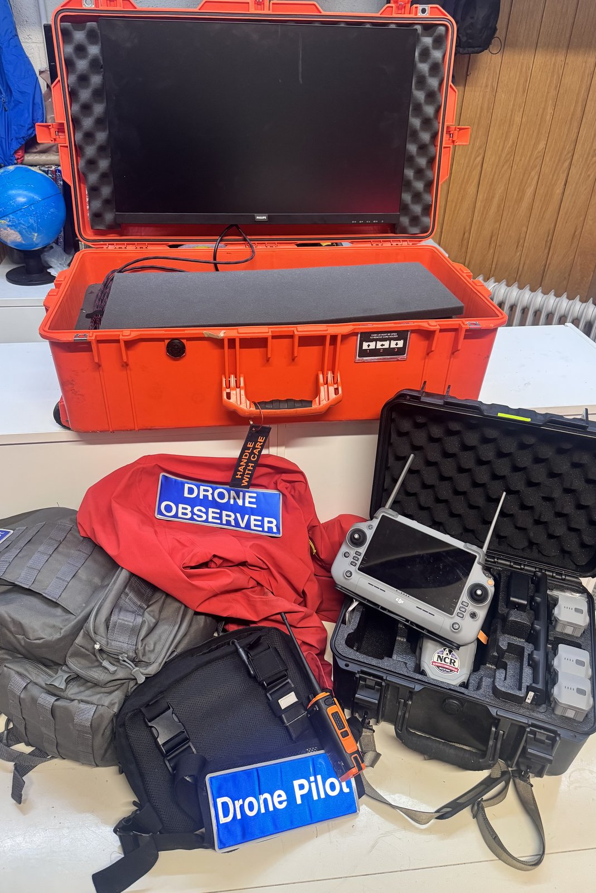
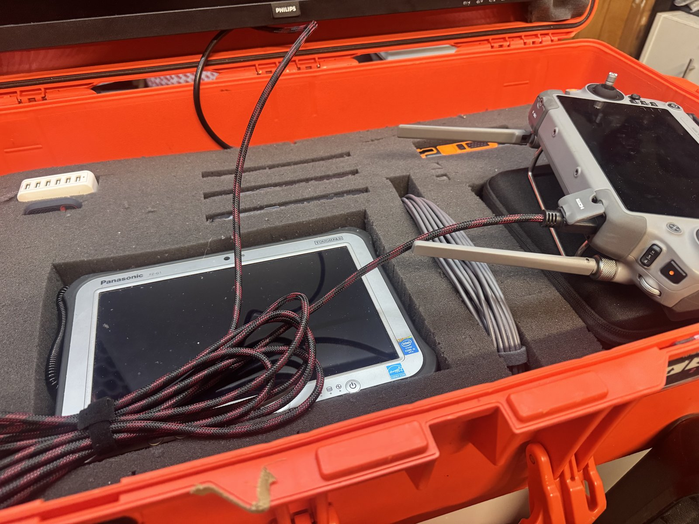
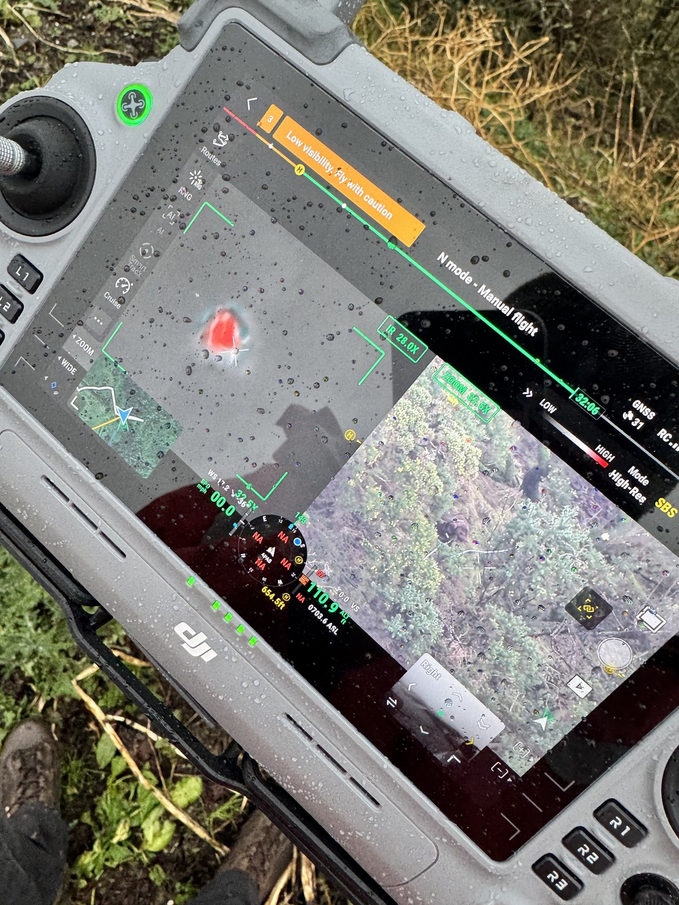
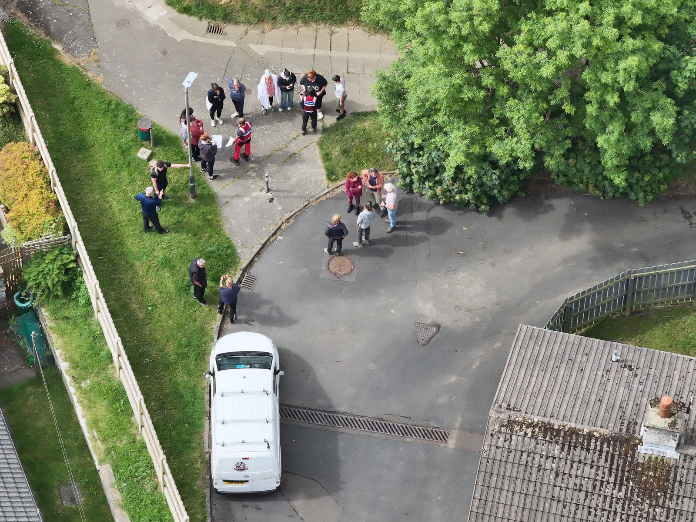
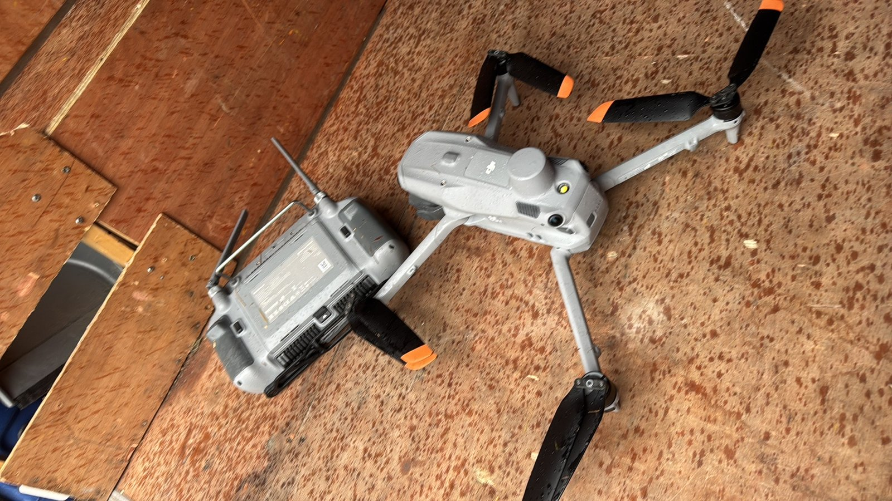
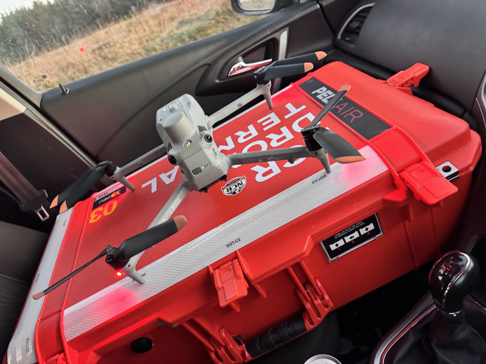

NCR DRONE TEAM
 NCR DRONE TEAM
NCR DRONE TEAM
Eyes in the Sky for Missing Dogs
Cutting-edge drone technology used to deliver vital benefits in our mission to reunite lost and missing dogs on the Isle of Man.
Cutting-edge drone technology used to deliver vital benefits in our mission to reunite lost and missing dogs on the Isle of Man.
When a dog goes missing on the Isle of Man, every hour counts. Dense woodland, steep glens, cliff paths, private farmland and open moorland can hide a frightened animal for days. The NCR Drone Team gives our volunteers a safe, rapid way to cover large areas, spot heat signatures in darkness, and guide ground searchers and scent dog Noodle to the right place, sooner.

The NCR Drone Team is a volunteer capability within Noodle’s Canine Rescue IOM (Charity No. 1387). It works hand in hand with our Ground Search Team, 4G wildlife camera operators, handheld thermal users and scent dog Noodle, never as a standalone service.
The team is led by experienced volunteer drone pilot Aaron O’Reilly, co-founder of Noodle’s Canine Rescue. Pilots and observers train together so that every flight supports a clear search plan, radio coordination and animal welfare.
“Thermal drones help us clear ground quickly and safely, so our volunteers on foot can focus on the places a dog is most likely to be, without putting people or animals at unnecessary risk.”

Our own drone is a DJI Matrice 4T, a thermal imaging aircraft that lets us look for a quiet, still dog in places that are hard to reach on foot, day or night, when conditions allow. It is the only drone NCR owns and operates.
It has a story behind it. During the Elvis search in 2025 (28 May to 1 July, before NCR existed), Karen hired a DJI Mavic 3 Thermal to help search for Elvis. The GoFundMe for a thermal drone of our own was started during that search, and the experience is what led to our Matrice 4T.
“I don’t know how I’d have got through it without Noodle’s. They were amazing.”
Detects heat signatures in dense woodland, coastal areas and complete darkness, conditions where a visual-only search can miss a quiet, still dog.
When conditions allow, the team can deploy after dark to cover large areas while ground teams work carefully on foot with handheld thermal and radios.
Planned search grids help clear plantations, farmland and upland stretches far faster than foot teams alone, so resources concentrate on priority zones.
Radio links keep the drone crew aligned with ground searchers, camera volunteers and scent dog Noodle, turning an aerial sighting into a calm, coordinated recovery.



Weather limits what we can fly. Rain and strong wind can ground the current aircraft, as happened during Storm Boelo on Suzie’s search in Ramsey in October 2026. When there is a break in the weather, though, the drone can get up and quickly narrow a search. That is why weather remains our biggest operational challenge (see Future plans below).
Thermal drones do not replace people on the ground. They help clear ground quickly, reduce risk in difficult terrain, and give families a faster path to answers, alongside flyers, 4G cameras, handheld thermal and scent work.
28 May 2025 to 8 November 2026

From NCR’s case log (28 May 2025 to 8 November 2026)
From 28 May 2025 to 8 November 2026 we logged 39 missing-dog searches. The thermal drone was deployed on 21 of them, just over half. Four dogs were located directly by the drone: Bruce, Scooby, Toffee and Millie.
Safe flying over Manx countryside means more than owning a capable aircraft. Our pilots and observers train for the Island’s mix of glens, plantations, farmland, coastline, cliffs and upland, and for the welfare of the dog at the centre of every call-out.
Observers and logistics volunteers are equally important: spotting, note-taking, battery management and keeping the search calm for a stressed animal.


Weather is our biggest setback. The current drone is limited in rain and strong wind, as families saw during Storm Boelo, when Suzie’s Ramsey search relied on flyers, thermal binoculars and 4G cameras because the aircraft could not fly.
We are now fundraising for a weatherproof DJI Matrice 5T, a rain- and wind-capable successor to our Matrice 4T, so more searches can launch when Manx weather would otherwise keep us on the ground.
Ongoing support also helps cover insurance, maintenance, spare batteries, pilot training renewals and the kit that sits alongside the drone: 4G wildlife cameras, handheld thermal and communications.

Whether you can fly, observe, fund kit or share an appeal, you strengthen Isle of Man search and rescue for missing dogs. Volunteers will be trained. Owners who need us can report a missing dog at any time.
Email noodlescaninerescue@gmail.com · Call 07624 464682 · Facebook
Learn more about the wider charity
Read our About Us story, browse News & Updates, or explore K9 First Aid training on the Island.